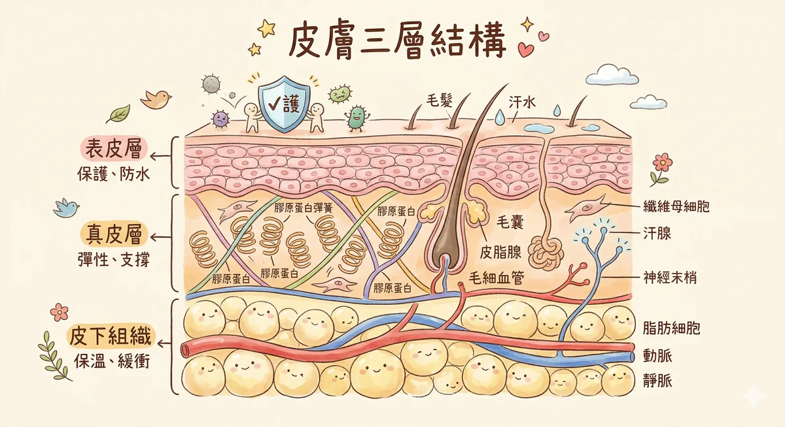

皮膚三层结构（科学版）

大部分人对皮膚的认知就是「一张脸」。但如果你把皮膚放大来看，它有三层完全不同的结构，每一层做的事情都不一样。搞清楚這个，你就不会再被广告话术牽著走了。
表皮层Epidermis
你肉眼看到的皮膚，其实只是表皮层最外面那一层。整个表皮层薄得像保鲜膜，但它分成五个亞层，从外到内分别是：
- 角质层（Stratum Corneum）— 最外层，由已经「退休」的角质细胞堆叠而成。很多人急著去角质，但這层不是垃圾，它是你的第一道防线。把它想成城墙的砖块
- 透明层（Stratum Lucidum）— 只出现在手掌和脚底，是额外的保护
- 颗粒层（Stratum Granulosum）— 细胞开始释放脂质，形成防水屏障
- 棘状层（Stratum Spinosum）— 免疫细胞（兰格汉斯细胞）驻紮在這里，帮你抵抗外来入侵者
- 基底层（Stratum Basale）— 新细胞在這里誕生，往上推，大约 28 天抵达角质层完成使命
這里住著三种关键细胞：角质形成细胞（keratinocytes，佔 95%，建造城墙的工人）、黑色素细胞（melanocytes，負責膚色和抵挡紫外线）、兰格汉斯细胞（Langerhans cells，皮膚里的免疫巡邏兵）。
28 天的更新周期，是皮膚自我修复的基本节奏。很多护膚品说「立即见效」，但皮膚的生理时钟不会因为你多花了钱就轉得更快。
真皮层Dermis
如果表皮是城墙，真皮就是城墙后面的整座城市。這里有：
- 膠原蛋白（Collagen）— 佔真皮层 70% 以上的结构蛋白，負責皮膚的弹性和饱满度。25 岁之后每年流失大约 1%。這不是行销恐嚇，這是生物学
- 弹性蛋白（Elastin）— 让皮膚拉伸后能弹回来的纤维。一旦断裂就很难再生，所以不要用力拉扯皮膚
- 纤维母细胞（Fibroblasts）— 制造膠原蛋白和弹性蛋白的工厂
- 血管网络 — 負責输送营养和带走废物。你脸红的时候，就是真皮层的血管在扩张
- 神经末梢 — 触觉、温度、疼痛，都是這些神经在传递讯号
膠原蛋白从 25 岁开始走下坡，這件事本身不值得焦虑。但紫外线会加速它的崩解，這个是你可以预防的。
皮下组织Hypodermis
最深的一层，主要由脂肪细胞组成。它做三件事：
- 缓冲垫 — 保护你的骨骼和内脏不受撞击
- 保温层 — 维持体温稳定
- 能量储存庫 — 需要的时候释放能量
随著年龄增長，皮下脂肪会重新分布（脸頰凹陷、下巴松弛），這不是护膚品能处理的范围。了解這个界线很重要。
精油如何穿透皮膚屏障
角质层的砖块之间有脂质「水泥」（主要是神经醯胺、膽固醇、脂肪酸）。分子量小于 500 道爾頓（Daltons）的物质可以穿过這些脂质间隙，被动扩散进入更深的皮膚层。
精油的分子量大多在 130 到 250 道爾頓之间，远低于 500 的门檻。所以它們能渗透，不是魔法，是物理化学。但渗透不代表到得了血液循环，大部分精油分子在真皮层就被代谢掉了。
常见皮膚问题的科学解释
每个皮膚问题背后都有一个生理机制在运作。搞懂机制，你就知道什麼有用、什麼只是安慰剂。点开每张卡片看细节。
痘痘与粉刺
到底发生了什麼事
痘痘的形成需要四个条件同时成立：皮脂腺分泌过多油脂、毛囊开口被角蛋白堵塞、痤瘡丙酸桿菌（P. acnes）在缺氧环境里大量繁殖、免疫系统发动发炎反应。少了任何一个，痘痘就長不出来。
什麼真的有帮助
- 温和清洁（不是用力洗）
- 避免高糖高乳制品饮食（有研究支持，但个体差异很大）
- 不要挤。发炎的痘痘挤了只会更慘
什麼其实没用
- 「深层清洁」，毛孔里的问题不是用洗的能解决的
- 酒精收斂水，暫时收缩毛孔，但会破坏皮脂膜，引发更多出油
精油建议
- 茶树（Tea Tree）— 研究证实对 P. acnes 有抑菌效果
- 熏衣草（Lavender）— 抗发炎，帮助舒缓红腫
- 浓度：1-2%，搭配荷荷芭油作基底
敏感肌
到底发生了什麼事
敏感肌的核心问题是屏障功能受損。角质层里的神经醯胺（ceramide）流失，砖块之间的水泥不够了，外界刺激物長驱直入。加上神经源性发炎，你的神经末梢变得过度敏感，正常的温度变化或触碰都会被解读为「威脅」。
什麼真的有帮助
- 简化保养步驟（步驟越多，刺激源越多）
- 补充神经醯胺和脂肪酸（修复水泥）
- 避免频繁更換产品
什麼其实没用
- 标榜「敏感肌专用」但含有香精的产品
- 不断尝試新东西，每換一次就是再刺激一次
精油建议
- 羅马洋甘菊（Roman Chamomile）— 含甜没药醇，温和抗炎
- 乳香（Frankincense）— 促进细胞修复
- 浓度：0.5-1%，极低浓度，基底用甜杏仁油或金盞花浸泡油
老化与皺纹
到底发生了什麼事
老化分两种。自然老化（chronoaging）是基因决定的时钟，膠原蛋白每年减少约 1%，弹性蛋白逐漸失去弹性。光老化（photoaging）是紫外线造成的额外伤害，UV-A 穿透到真皮层，产生自由基，加速膠原蛋白崩解。80% 的「看起来老」其实是光老化，不是自然老化。
什麼真的有帮助
- 防晒，這是唯一经过大量研究验证、确实能延缓光老化的行为
- 抗氧化剂（维生素C、维生素E）中和自由基
- 充足睡眠，生長激素在深度睡眠时分泌，修复白天的損伤
什麼其实没用
- 口服膠原蛋白，消化系统会把它拆成胺基酸，不会直达你的脸
- 「逆龄」产品，没有任何外用品能逆轉已经断裂的弹性蛋白
精油建议
- 玫瑰（Rose）— 含抗氧化多酚，香气本身也有情绪舒缓效果
- 乳香（Frankincense）— 传统上用于促进细胞更新
- 胡蘿蔔籽油（Carrot Seed）— 含天然类胡蘿蔔素，抗氧化
- 基底油推薦：玫瑰果油（富含维生素A前驱物）
色素沉澱与斑点
到底发生了什麼事
黑色素本来是好东西，它像遮阳傘一样挡住紫外线，保护你的 DNA 不被破坏。但有时候黑色素细胞会「过度反应」：紫外线照射后的反弹（晒斑）、发炎痊愈后的色素残留（痘印）、荷爾蒙变化导致的大面积沉积（肝斑/孕斑）。這三种成因不同，处理方式也不一样。
什麼真的有帮助
- 防晒（又是它，因为紫外线会让所有类型的色素沉澱都惡化）
- 酪氨酸酶抑制剂，市面上 80% 的美白产品在做的事就是這个
- 耐心，色素代谢需要数个月，没有速效方法
什麼其实没用
- 频繁做「亮白」疗程，过度刺激反而可能引发更多色素沉澱
- 不分斑点类型就乱涂药膏
精油建议
- 檸檬（Lemon）— 含檸檬烯，但注意：柑橘类精油有光敏性，用了之后 12 小时不能晒太阳
- 天竺葵（Geranium）— 调节皮脂，促进膚色均勻
- 浓度：1%，只在晚间使用
乾燥与脫皮
到底发生了什麼事
皮膚乾燥的学名叫「经皮水分散失」（Transepidermal Water Loss，TEWL）。你的角质层屏障不够致密，水分像没盖盖子的杯子一样不断蒸发。通常是因为神经醯胺（ceramide）不足，這些脂质是角质层「砖块」之间的水泥，水泥不够，水就留不住。
什麼真的有帮助
- 保湿分两步：先补水（玻尿酸、甘油等吸水成分），再鎖水（油脂、角鯊烯等封闭性成分）
- 洗完脸 3 分钟内上保湿，角质层含水量最高的时候鎖住它
- 减少热水洗脸的频率，热水会带走天然皮脂
什麼其实没用
- 噴保湿噴霧但不擦油，水噴上去蒸发掉的时候会带走更多水分
- 只用乳液不用油脂，乳液的封闭性通常不够
精油建议
- 檀香（Sandalwood）— 保湿鎖水，适合乾燥老化肌
- 天竺葵（Geranium）— 平衡皮脂分泌
- 基底油推薦：玫瑰果油（渗透性好）或荷荷芭油（最接近人体皮脂的植物油）
油性肌膚
到底发生了什麼事
皮脂腺的活躍程度主要受两个因素控制：荷爾蒙（特别是雄性激素 DHT）和遗传。青春期出油多是因为荷爾蒙波动；成年后持续出油通常是基因决定的皮脂腺数量和敏感度。压力也会透过皮质醇间接增加皮脂分泌。
什麼真的有帮助
- 温和清洁，一天两次就够了
- 用轻质保湿，油性肌膚也需要保湿，缺水反而会刺激更多出油
- 含菸鹼醯胺（维生素B3）的产品有研究支持能调节皮脂
什麼其实没用
- 吸油面纸，吸走表面的油，皮脂腺 30 分钟内就补回来
- 强力去油洗面乳，破坏皮脂膜后，皮脂腺收到「油不够」的讯号，反而更拼命分泌
精油建议
- 丝柏（Cypress）— 收斂效果，调理毛孔
- 檸檬（Lemon）— 清洁力好，但同样注意光敏性
- 茶树（Tea Tree）— 抑菌 + 控油双效
- 基底油推薦：荷荷芭油（液态蜡，不会堵塞毛孔）
精油与皮膚的科学
精油不是仙丹，但也不是噱头。它有明确的分子机制在运作。搞懂這些，你就能分辨哪些说法有根据、哪些只是在卖感觉。
精油的三种作用路径
精油作用在皮膚上，主要走三条路：
第一，分子渗透。精油分子小（130-250 Da），可以穿过角质层的脂质间隙进入表皮和真皮层。到了真皮层，部分活性成分会与细胞受体结合，触发抗发炎或抗菌的级联反应。
第二，抗菌活性。很多精油含有的单萜烯醇（如沉香醇、萜品烯-4-醇）能破坏细菌的细胞膜结构。茶树精油对 P. acnes 的抑菌效果有多项臨床研究支持。
第三，嗅觉-神经-免疫軸。嗅觉信号直达边缘系统，影响压力荷爾蒙的分泌。压力降低 → 皮质醇降低 → 发炎反应减少 → 皮膚状态改善。這条路径是间接的，但真实存在。
精油 vs. 人工香精：受体结合的差异
天然精油的分子能与嗅觉受体蛋白结合，启动神经信号传递。人工合成的香精（fragrance）模仿气味，但分子结构不同，受体结合的效率和方式也不同。
简单来说：聞起来像熏衣草，不代表它能触发熏衣草引起的那套神经反应。香水让你觉得好聞，但不一定能让你的皮质醇降下来。
基底油：不是稀释用的配角
基底油不只是用来稀释精油的溶剂，它們本身就有护膚功效，而且是精油的「运输系统」。选对基底油，效果差很多：
► 荷荷芭油（Jojoba）— 严格来说是液态蜡，分子结构最接近人体皮脂。皮膚辨识它为「自己人」，吸收快、不堵塞毛孔。油性肌膚的首选基底。
► 玫瑰果油（Rosehip）— 富含亞麻油酸和维生素A前驱物（视黄醇），适合老化和色素沉澱的肌膚。
► 摩洛哥坚果油（Argan）— 富含维生素E和脂肪酸，修复屏障、抗氧化，乾燥肌的好伙伴。
稀释浓度：這不是可以省略的步驟
精油是高度浓缩的植物萃取物。一滴玫瑰精油需要大约 60 朵玫瑰。直接涂在皮膚上，刺激性会远超过你想像。稀释不是因为怕浪费，是因为皮膚承受不了那个浓度。
| 使用部位 | 建议浓度 | 精油滴数/10ml基底油 | 适用情境 |
|---|---|---|---|
| 脸部 | 0.5 - 1% | 1 - 2 滴 | 日常保养、敏感肌 |
| 脸部 | 1 - 2% | 2 - 4 滴 | 局部问题处理（痘痘、斑点） |
| 身体 | 2 - 3% | 4 - 6 滴 | 按摩、一般保养 |
| 身体 | 3 - 5% | 6 - 10 滴 | 肌肉痠痛、短期局部使用 |
| 敏感部位 | 0.25 - 0.5% | 约 1 滴 | 儿童、孕婦、极敏感肌 |
用多了不会效果更好，只会让皮膚过敏。這是做了 34 年不会变的经验法則。
护膚迷思破解
這些迷思我在美业 34 年里聽了不下一千遍。每次聽到都会心里叹一口气。不是怪你不懂，是因为太多广告在误导。
「天然就是安全」
河豚毒素是天然的。毒蘑菇是天然的。你不会因为它們天然就放心吃下去。精油也一样，肉桂醛直接接触皮膚会造成化学灼伤；柑橘类精油含有呋喃香豆素，涂了之后晒太阳会引发严重的光敏性反应（起水泡、色素沉澱）。天然和安全之间，隔著一个「正确使用」。所有的精油都需要稀释，所有的安全都需要知识。
「毛孔可以缩小」
毛孔的大小主要由基因决定。你的毛孔該多大，出生的时候就决定了。能做的事情有两件：第一，保持毛孔乾净（减少堵塞），让它看起来不那麼明显；第二，用收斂性成分（如金縷梅、菸鹼醯胺）暫时让周围皮膚紧致。但這些效果都是暫时的，毛孔本身的物理结构不会改变。花大钱买「毛孔隐形」产品之前，先接受這个事实会比较不容易失望。
「去角质越多越好」
前面说过，角质层是你的城墙，不是垃圾。正常的角质层由 15-20 层角质细胞紧密排列而成，它阻挡紫外线、阻挡细菌、阻挡水分蒸发。过度去角质等于拆自己的城墙，结果就是敏感、泛红、越来越薄。一般皮膚一周一次温和去角质已经足够。敏感肌两周一次，或乾脆不做。你的皮膚有自己的更新节奏（28天），不需要你催它。
「贵的就是好的」
一瓶 NT$5,000 的面霜和一瓶 NT$500 的面霜，核心成分可能一模一样。价差来自包装、行销预算、品牌溢价、专柜租金。不是说贵的一定不好，有些高端品牌确实在研发上投入很多，但重点永远是成分表，不是价格标签。学会看成分表比学会看价格重要一百倍。配方的关键在浓度和比例，這两件事从价格上看不出来。
「喝水就能保湿」
你喝的水先进入消化系统、被小腸吸收进血液、循环到全身各器官，皮膚是最后才排到隊的。而且，水到了真皮层，还要靠角质层的屏障功能才留得住。如果屏障有问题，水从里面蒸发的速度比你喝的还快。体内补水和皮膚保湿是两件事，两个都要做，但不能用一个替代另一个。喝水很好，但解决不了角质层的问题。
皮膚冷知识 5 則
這些事情你可能从来没想过，但每一件都跟你的日常护膚有关。知道這些不会让你变成皮膚科医生，但会让你更理解自己身上這层东西到底在干嘛。
皮膚是你身上最大的器官
摊开来大约 1.5 到 2 平方公尺，重量占体重的 16% 左右。比你的肝脏大、比你的腸子重。它不只是一层包装纸，它是一整套防禦系统、温度调节器、感觉接收器。你花那麼多时间照顾脸，其实脸只佔皮膚总面积很小的一部分。
你每天掉 4 万个皮膚细胞
聽起来很嚇人，但這是正常的。角质层的细胞大约 28 天完成一次代谢周期，老的脫落、新的顶上来。一年下来，你等于換掉了整张皮膚好幾次。所以那些号称「永久改变膚质」的产品，你可以想一下邏輯上说不说得通。
压力让皮膚变差不是心理作用
這件事有生理机制。压力会让你的腎上腺释放皮质醇（cortisol），皮质醇升高会刺激皮脂腺分泌更多油脂，毛孔堵塞，痘痘就来了。同时皮质醇还会抑制膠原蛋白合成，让皮膚修复变慢。所以考試前、deadline 前冒痘不是巧合，是你的身体在告訴你它撑不住了。
腸道健康直接影响皮膚
医学上叫「腸 — 皮軸」（gut-skin axis）。腸道菌群失衡的时候，腸壁通透性增加，发炎因子跑进血液循环，最后反映在皮膚上，冒痘、泛红、敏感、甚至酒糟都跟腸道有关。這也是为什麼有些人改善饮食之后，皮膚状况会跟著好轉。不是迷信，是有研究支撑的。
晚上 11 点到凌晨 2 点是皮膚修复高峰
這段时间生長激素（growth hormone）分泌最旺盛，细胞分裂速度加快，皮膚的自我修复机制全力运轉。所以「美容觉」不是噱头，是有道理的。你涂再贵的精华液，效果都比不上在這个时段好好睡著。反过来说，長期熬夜的人皮膚修复速度会明显下降，老化也来得更快。
早晚护膚仪式 × 精油版
护膚步驟不用多，重要的是顺序对、产品对、然后日复一日坚持做。下面是我自己在用的精油护膚流程，很简单，十分钟内搞定。
早晨｜清醒 + 保护
温水洗脸就好，不需要用很强的洗面乳。早上的脸不髒，只是有一些夜间代谢的油脂和汗液，温水加上温和的洁面乳就够了。
洗完脸趁皮膚还湿的时候，涂一层 1% 天竺葵保湿油。天竺葵（Geranium）调节皮脂的效果很好，不管你是偏油还是偏乾，它都能帮你平衡。1% 的意思是 10ml 基底油里面加 2 滴精油，用荷荷芭油或甜杏仁油当基底都行。
最后一步是防晒。這是整个护膚流程里最重要的一步，没有之一。紫外线造成的光老化佔皮膚老化因素的 80%。你可以不擦精华液、不做面膜，但防晒不能省。
晚上｜清洁 + 修复
有上妆或防晒的话，先用卸妆油或卸妆乳把那一层东西溶掉，再用温和的洁面乳洗第二次。這叫双重洁面，目的是确保毛孔里面没有残留。
洗完之后，涂 1% 熏衣草修复油。真正熏衣草（Lavandula angustifolia）里的沉香醇和乙酸沉香酯有舒缓和促进细胞再生的作用，很适合睡前用。同样的比例：10ml 基底油加 2 滴熏衣草精油。
每周做一次乳香面膜：1 滴乳香精油 + 1 茶匙蜂蜜 + 1 茶匙无糖优格，搅勻敷脸 15 分钟。乳香有促进细胞更新的传统用途，蜂蜜保湿，优格里的乳酸温和去角质。三个加在一起，隔天早上摸脸会有感觉。
创办人的话
我做了 34 年的美业。从学徒开始，到拿碩士学位研究「美容愉悅感与身体意象」，到现在用馥灵之钥整合 33 套智慧系统。我碰过的皮膚大概比大部分人一辈子见过的脸还多。
這些年我看到太多人因为不了解自己的皮膚，花了冤枉钱、受了不必要的罪。有人被话术嚇到以为自己的脸快爛了，有人因为用错方法反而把好好的皮膚搞坏了。
所以這页不卖任何东西。没有产品连结，没有购买按鈕，没有「限时优惠」。就是把我知道的事情说清楚，用你看得懂的话。
护膚的終点不是完美的皮膚，是接受自己的皮膚，然后好好照顾它。
皮膚是你身上最大的器官。它陪你淋过雨、晒过太阳、哭过笑过熬过夜。它不需要被嫌弃，它需要被理解。
如果你想更了解自己，不只是皮膚，而是你這个人，可以去做做看我們的心理测验，或者用命盘引擎跑一次自己的数据。觉察从任何一个角度开始都可以，皮膚只是其中一个入口。
— 王逸君，馥灵之钥创办人｜美业资历 34 年+｜碩士（健康产业管理研究所）